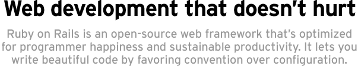

Agenda - Day 1
- Presentation of course participants
- Rails background and philosophy
- Installing and configuring Rails
- Creating the "Hello World" application
- Introduction to Ruby
- Basic Rails architecture
- Get started on a simple Rails application
Agenda - Day 2, 3
- TextMate
- AJAX
- REST
- Finishing the Rails application
- Deployment
- Where to learn more and get help
Presentation of course participants
- Peter Marklund
- Great Works
- Expectations on the course
Rails Background and Philosophy
Rails Elevator Pitch

Installing and Configuring Rails
- On Windows you can use the InstantRails package
- Three installation options on Mac OS X (in order of increasing difficulty)
Creating the Hello World Application
- script/generate controller Say
- Map the Say controller to "/" in config/routes.rb to
- Remove public/index.html
- Create the app/views/say/index.rhtml file
- Start the webrick server
- Visit http://localhost:3000 - voila!
Introduction to Ruby
- Variables and methods
- Control Structures
- Built-in classes: String, Array, Hash
- Classes and Objects
Basic Rails Architecture
- MVC
- Models and ActiveRecord
- Controllers
- Views
- rake
- script/console
- migrations
- script/generate
Start Building the Freelancer Application
- Setup the Rails app and configure the database
- Setup the model and admin UI: script/generate scaffold_resource Creative
- Add tags with the acts_as_taggable plugin
- Add tags to the admin UI
- Build the homepage listing creatives by tag
TextMate - Editing in Style
- All of the Rails core team uses TextMate
- Automatic software updates
- Files, tabs, and navigation
- Integrates with Subversion for version control
- Extensible via code snippets and commands
- Folding - expanding/collapsing classes and functions
- The PeepCode Screencast on TextMate is very useful
- There is a TextMate Book from the Pragmatic Programmers
- The Reference Manual is quite good
AJAX
- What is AJAX?
- What can you do with AJAX?
- Dynamically add to a list (or a select box)
- In-Place Form Editing
- Autocomplete a Text Field
- Drag-and-Drop Sortable List
- Live searching
- Rails AJAX support. How does it work?
REST - Different Apps Talking to Each Other
- REST is a lightweight alternative to RPC (SOAP)
- Rails uses CRUD over HTTP with XML
- You generate the interface with script/generate scaffold_resource
- Requires the latest Rails (Edge Rails)
- REST client not available in Rails yet
Finishing the Freelancer Application
- Add thumbnails with the file_column plugin
- Add a nice look and feel using layouts and css
- Make it possible to filter by multiple tags on the homepage
- Add searching using acts_as_ferret
- Add AJAX auto-completion and in-place form editing
Deploying the Freelancer Application
- The dark past of Rails deployment: LightTPD+FastCGI
- Zed Shaw and Mongrel to save the day
- Apache+Mongrel or Mongrel standalone
- Scalability
Where to Learn More
- Rails website, Ruby website, Ruby code repository, Ruby API, Rails API
- Recommended books:
- PeepCode - excellent instruction videos (screencasts)
- The Swedish Rails Community - has a mailing list
- Get involved in the community - you will get so much back!